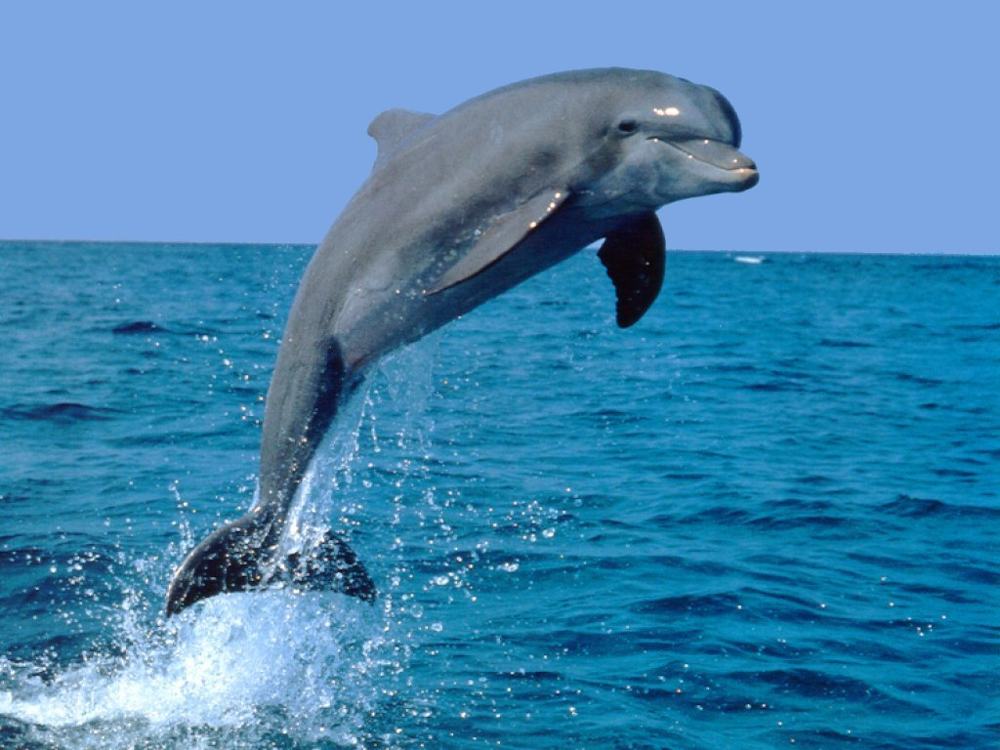
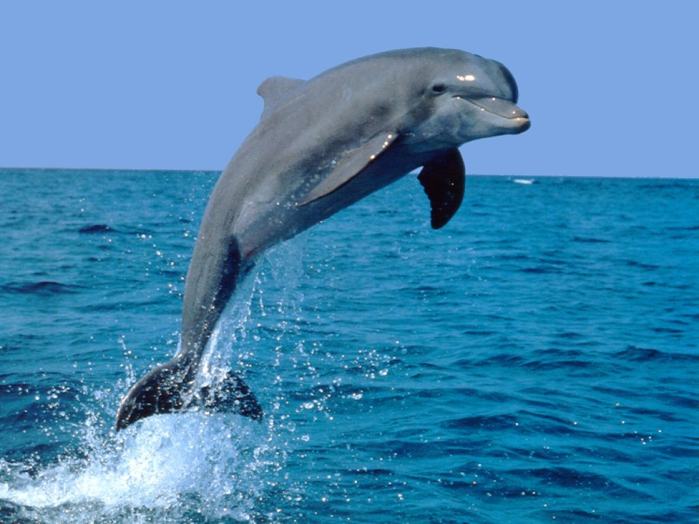
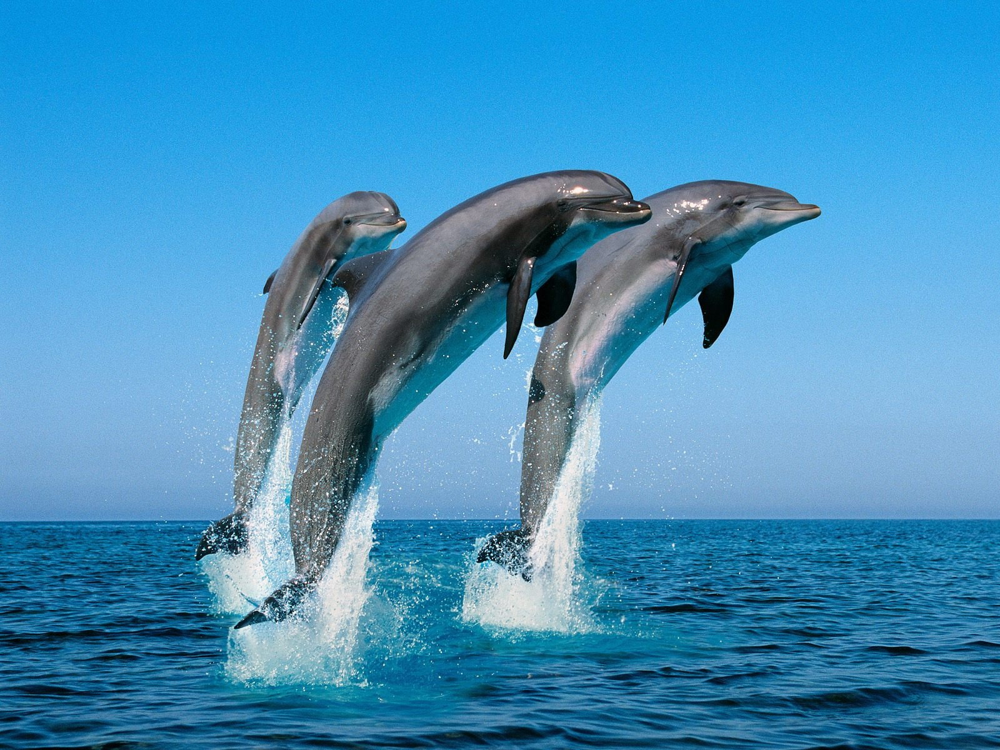
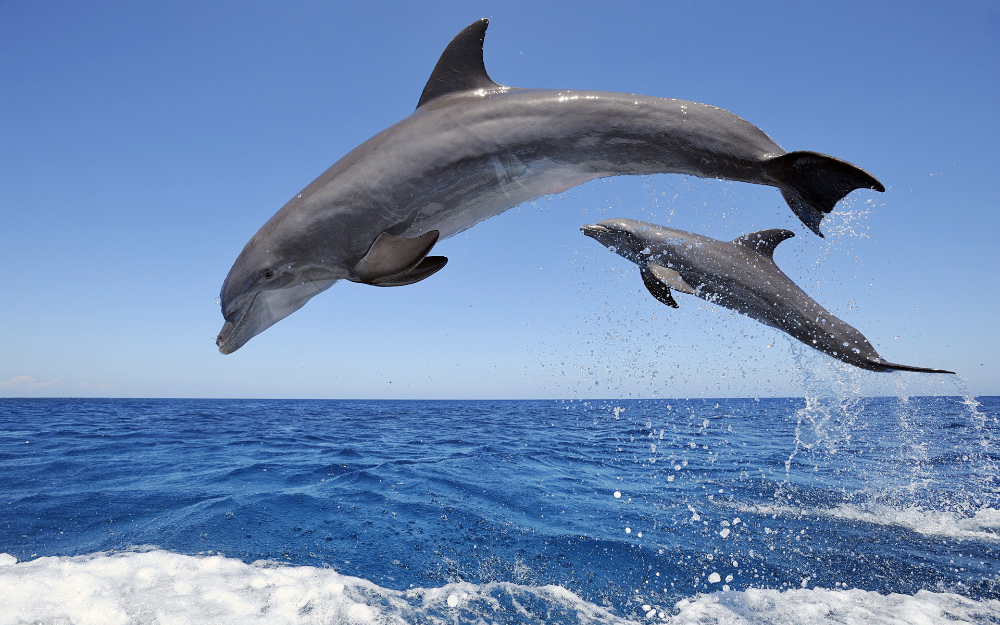
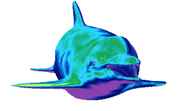
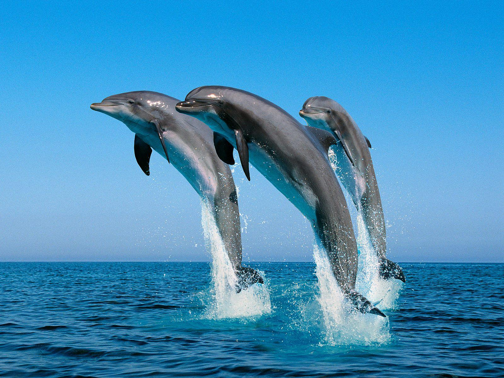
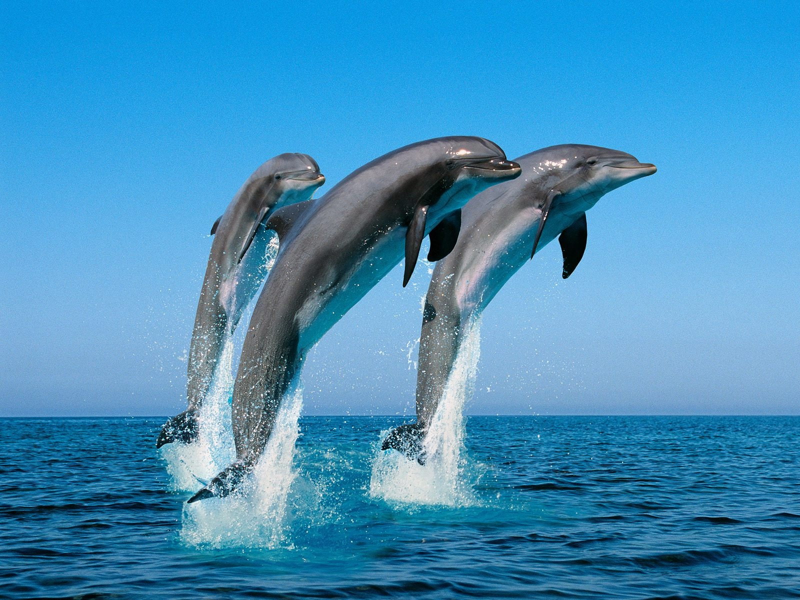
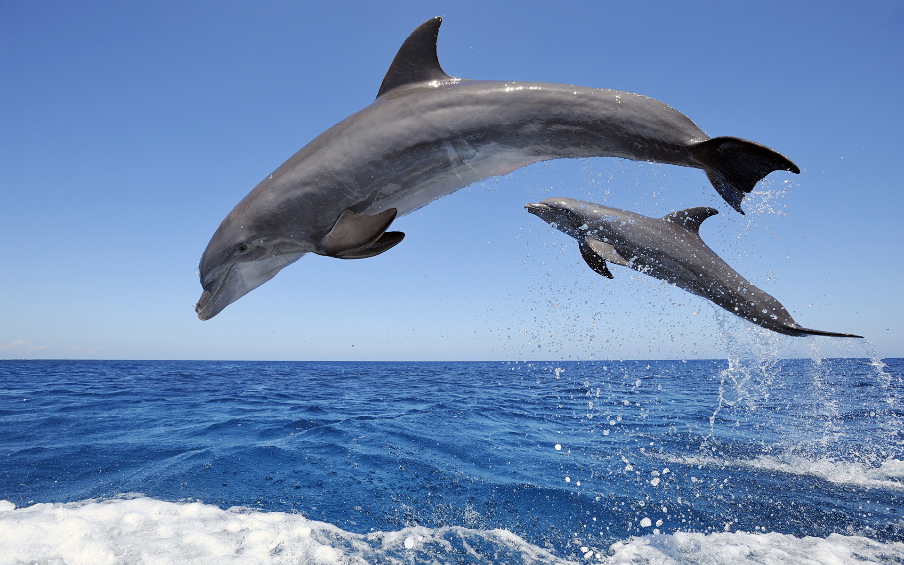
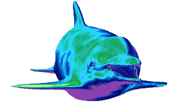
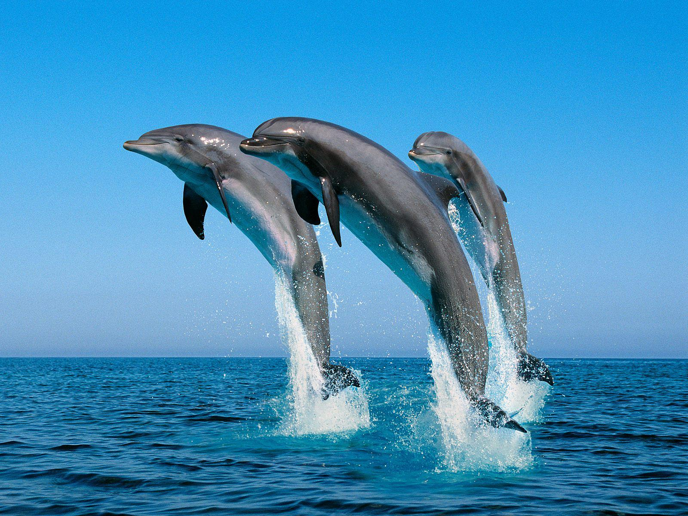

 








THE DOLPHIN
Eventually a dance beat kicks in and a mysterious, flutelike squiggle — Skrillex calls it the “dolphin” — announces itself again and again as the vocals all but disappear: There’s just the occasional refrain, “Where are you now that I need you?”